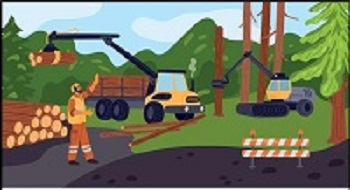
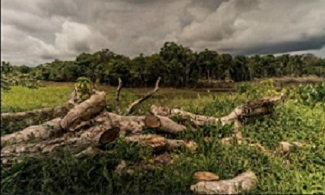

una de las principales causas son las Expansiónes agricolas ya que con esto Se talan bosques para crear áreas de cultivo, esto acompañado de una
Ganadería extensiva por que Grandes superficies forestales son convertidas en pastizales para el ganado.
la explotación maderera tambien influye ya que La extracción de madera para la industria y el consumo humano es algo ddemasiado comun.
otra causa dremasiado grave es la Urbanización e infraestructura: Construcción de carreteras, viviendas y ciudades.
Incendios forestales: Muchos son provocados para despejar terrenos.

Una de las principales soluciones para combatir la deforestación es la reforestación, que consiste en plantar árboles en las zonas donde los bosques han sido talados para recuperar los ecosistemas afectados. También es fundamental promover un manejo forestal sostenible que permita aprovechar los recursos naturales sin destruir los bosques ni impedir su regeneración. Asimismo, es necesario fortalecer las leyes y los mecanismos de vigilancia para combatir la tala ilegal, una de las causas más importantes de la pérdida de áreas forestales.